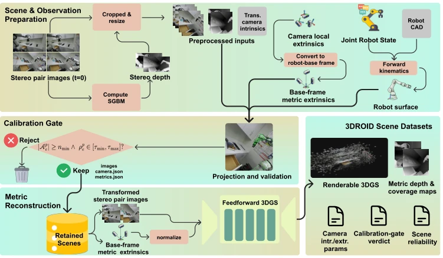
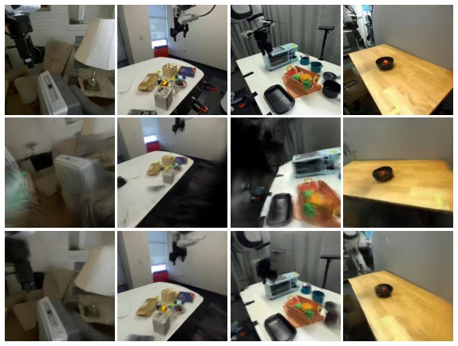
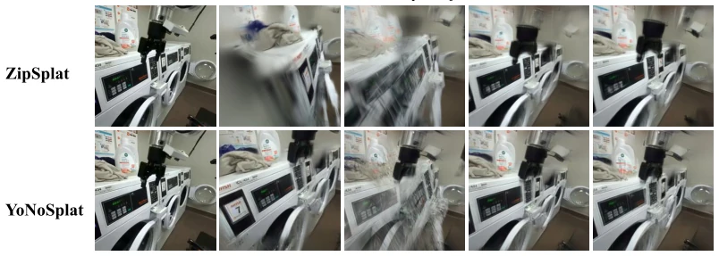

这篇论文给 3D 高斯泼溅（3DGS）数据集界泼了盆冷水。市面上 3DGS 数据集多如牛毛，但大多只关心“看着像不像”，不管“尺度对不对”。3DROID 聪明地承认了相机外参不可靠的问题，搞了个“可靠性检测门”，把 DROID 里那些瞎编的尺度给筛了一遍。虽然它没敢吹嘘能直接提升策略性能，但这份“体检报告”比很多盲目自信的数据集实在。不过，只支持静态场景、排除手腕相机，感觉像是给机器人装了个“近视眼镜”，看远处还行，近处操作还得靠猜。对于追求 metric 一致性的研究来说，是个不错的基准，但别指望它能解决所有尺度模糊问题。
This paper pours cold water on the 3D Gaussian Splatting (3DGS) dataset landscape. There are numerous 3DGS datasets on the market, but most care only about "whether it looks like it" and not "whether the scale is correct". 3DROID cleverly acknowledges the unreliability of camera extrinsics, implementing a "reliability detection gate" to filter out the fabricated scales within DROID. Although it dares not boast about directly improving policy performance, this "health check report" is more substantial than many blindly confident datasets. However, supporting only static scenes and excluding wrist cameras feels like fitting the robot with "myopic glasses"; it works for distant viewing, but near-field manipulation still relies on guessing. For research pursuing metric consistency, it is a decent benchmark, but do not expect it to solve all scale ambiguity problems.
Robot manipulation is essentially a geometric problem, but existing data is mostly based on 2D observations [9]. Although geometric priors such as depth and point clouds are introduced [10, 16], the renderable 3DGS representation primarily pursues photometric fidelity, often losing the metric scale of the real world [8]. Especially when camera extrinsics are unreliable, the reconstructed scene may look realistic but suffer from scale drift, leading to Sim(3) ambiguity. Existing work such as PointWorld [6] has improved calibration but has not exposed reconstruction reliability at the dataset level. Although DROID [9] is widely used, its camera pose noise is large, and using it directly for 3DGS reconstruction may lead to physical inconsistency. Therefore, a method is needed that can separate photometric fidelity from physical consistency and quantify the reliability of each scene to support 3D reasoning for embodied intelligence.
The overall process covers scene preparation, calibration gating, reconstruction, and output. First, scenes containing stereo video and trajectories are filtered from DROID. The core innovation lies in "calibration gating": using robot forward kinematics combined with CAD models to generate robot surface points, comparing with stereo depth maps, calculating the projection depth ratio, and filtering out scenes with unreliable extrinsics (retaining ratios between 0.85-1.15). Subsequently, Pose-conditioned Feed-forward 3DGS (e.g., ZipSplat [11]) is used, inputting extrinsics optimized by PointWorld [6], rather than directly using raw DROID extrinsics. After reconstruction, renderable 3D Gaussians, metric depth maps, and coverage masks are output. Finally, reliability metadata for each scene is generated by the difference between rendered depth and stereo/kinematic depth, clearly marking which scenes can be used for metric tasks and which are only suitable for photometric tasks. This method decouples photometric fidelity and physical consistency, ensuring the reconstructed scene is anchored in the robot's metric workspace.

Figure 1: Overview of the 3DROID pose-conditioned construction pipeline. The figure summa- rizes the scene preparation, calibration gate, reconstruction, and dataset outputs detailed in Section 3.
Based on DROID's 520 scene groups, 114 high-quality scenes are retained after calibration gating. The baseline compared Pose-free 3DGS (using raw DROID extrinsics) with Pose-conditioned (using optimized extrinsics). Evaluation metrics include PSNR/SSIM/LPIPS and robot depth error. Results show that after combining optimized extrinsics and pose conditioning, PSNR improved by about 3dB (e.g., ZipSplat from 12.75 to 16.27). In terms of geometric consistency, optimized extrinsics significantly reduce error, but pose conditioning alone yields limited geometric benefits without reliable extrinsics support. Ablation studies confirm that extrinsic quality is crucial for scale anchoring. Additionally, the paper does not claim full-scene geometric ground truth, but provides a reliability envelope, reflecting a rigorous data release attitude.

Figure 2: Qualitative held-out rendering with ZipSplat. Each column shows a different scene. Rows show the ground-truth ext2R image, the pose-free baseline using shipped DROID extrinsics, and our pose-conditioned reconstruction using PointWorld-refined extrinsics. All reconstructions use the remaining three exterior views.

Figure 3: Qualitative ablation on held-out ext2R. Rows show ZipSplat and YoNoSplat on the same scene. After the ground-truth column, reconstruction columns follow the variants defined in Table 4. All variants use the same three exterior input views.